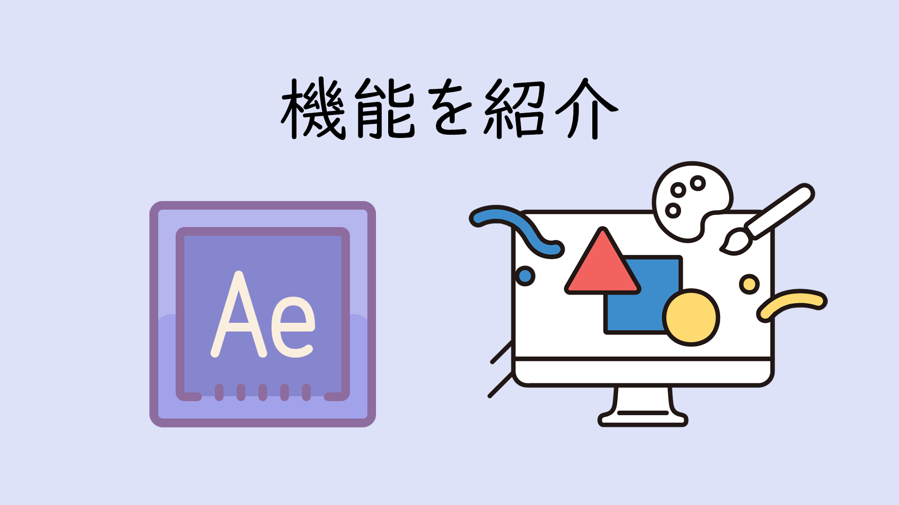

はじめまして！ After Effects

After Effects （以下、AE）は、Adobe社が提供する映像制作ソフトで、「動き」をデザインするための多機能ツールです。ここでは、初心者でも押さえておきたい主要な機能を簡単に紹介します。
タイムラインとキーフレーム
動きの基本をつくる「時間の線」
AEでは、オブジェクトの動き（位置・回転・不透明度など）を「キーフレーム」でコントロールします。時間の流れに合わせてアニメーションを設計することができます。
コンポジション
映像のキャンバスをつくる場所
コンポジションは、アニメーションや映像を作る「土台」のようなもの。サイズや時間、フレームレートなどを設定し、その中で素材を動かします。
レイヤー構造
素材を重ねて作る表現
Photoshopのように、AEでも素材は「レイヤー」として積み重ねて使います。画像・動画・文字・図形など、さまざまな要素を組み合わせて表現が可能です。